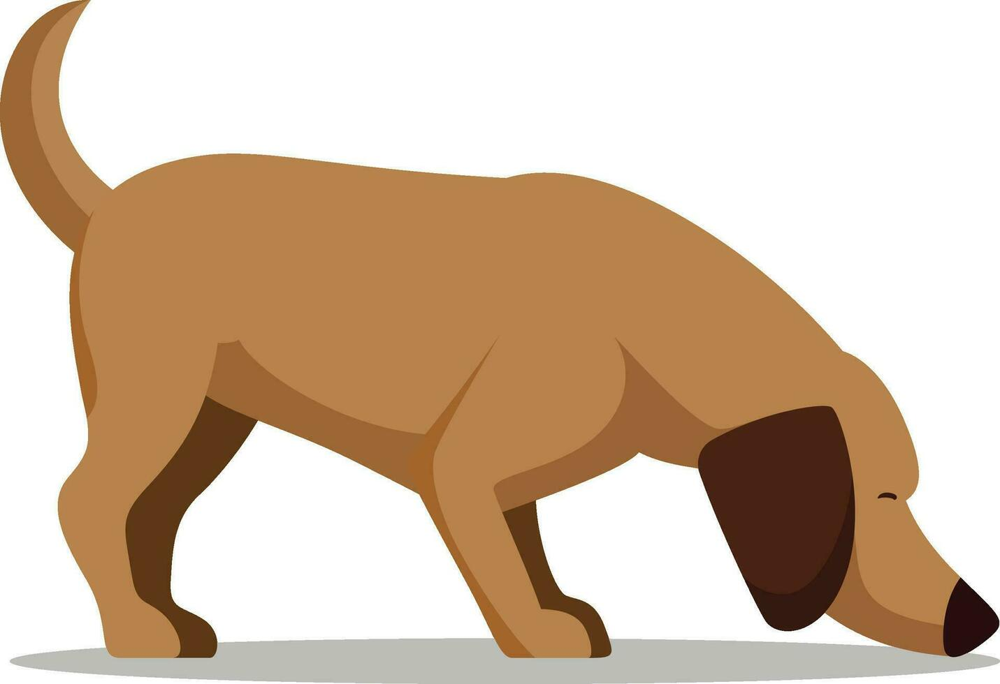

HoundFetch
scraping random APIs since 2026! :)
🌓 Toggle Theme
🅰️ Dyslexia Font
Search live Wikipedia entries...
Execute Query
Navigation
📰 Site Dashboard
🌐 World Wide Web
🔗 HTTP Protocol
⚙️ WebAssembly Core
Portal Utilities
🎓 Generate Bibliography Citation
📡 System Status & Latency
🧹 Clear Node Memory Cache
🖨️ Print Layout Tree